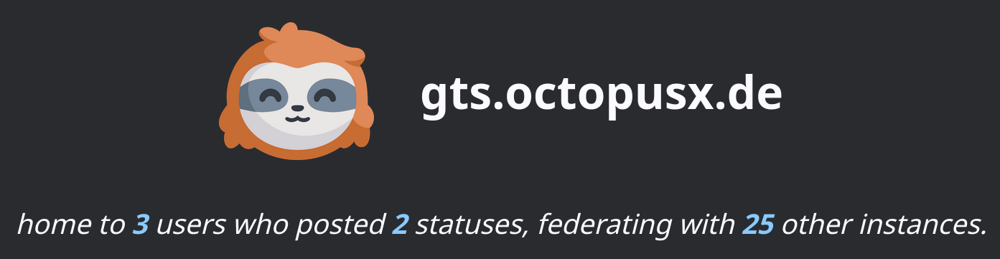

9 minutes
Enter the Fediverse
Being ancient, as one finds themselves at one point in live, I still remember the times before Facebook. I got into it briefly in my late teens but then dropped it like a stone once I realised that I was spending way too much time doom scrolling… And that was in the 00’s, I find it hard to imagine getting into it now and I am feeling am grateful that having the entire “facebook” domain blocked on my pihole really is not a problem for anyone in my home. Twitter I never got into, it always felt so impersonal and distant. It felt very corporate and sanitised. Some companies I did business with used it as a support desk, which only enforced this feeling of very little “social” happening in this “social network”.
With that in mind, I was not craving any sort of a replacement for those services, as many have been with the recent mass migrations to the Fediverse. I was enticed by the prospect to join this migration nevertheless, as social networks in their federated iteration are a much healthier fenomenon in my opinion, and as we know they live or die by the interactions and presence of their users. Joining was going to by my 2 cents added to the jar of reasons for the federated future to keep getting more realistic for all.
How does the Fediverse work?
The Fediverse is a decentralised social network, where users are not tied to any single platform or service. More importantly, they are not locked in by any one vendor or company. Any server can join or leave the network at any time, and user’s data is not stored by any centralised entity. One can begin to participate in the social network by creating a user account on one of many free or paid federated servers. The most common type of servers in the Fediverse are Mastodon servers. The main instance ran by the Mastodon team is mastodon.social, and another popular among the FOSS community is fosstodon.org.
I have created and used my account on mastodon.social for a few months now, and it definitely gives me a more community-like vibe. I discover and follow accounts of people that I listen to in podcasts or follow via github or even some that I have met in real life (what an idea, eh?).
Creating an account on someone else’s server though wouldn’t be the self hoster’s way now, would it! Having now been invested in the network somewhat and gained a basic understanding of how it can be used, I decided to start a search for a suitable way to deploy my own instance. First port of call was the full fat Mastodon server. Hosting these has become very popular in the recent months thanks to Techno King himself, and so many a person has tried it and there are a lot of documentation and information about what is involved. You can see this blog post as an example. I have listened to a Late Night Linux show too at some point where I remembered one of the hosts mentioning that they hosted a server at Canonical for a few people and shortly after they were using up as much 5mbit of bandwidth per second constantly and an extra 50GB of disk space per month! If this were true for my instance I would run out of space in my homelab after around a year and a half…
Why does this happen though you may ask? And is this a Mastodon issue, or is it inevitable no matter what server you? So, to an extent it is inevitable, though likely not as bad as it seems, let me explain. Let’s say, you’re creating your own server and on that server you create your Fediverse account. At that point the only data the server will store is anything you post. Any images or text you put in your status updates. Now, if you crate a few accounts for some friends/family, everyone on the server can see each other’s posts, no big deal, you’re still just storing only the posts of your own users. The data transfer and storage issues begin when you start following people on other Mastodon/Fediverse servers. Each time you follow someone on another server, your and the other server will form a bond, i.e. federate. In order for your account to get updates on the person you follow on another instance, your server will now permanently connect to the other instance and continuously download and locally store the posts of the other user. So, the more people you follow the more storage you end up using locally. And the more servers you federate with, the more bandwidth you will end up using.
What to host?
As I am a hipster at heart just hosting an instance of an alternative social network was too mainstream for me, I started looking for a lightweight Fediverse server to host instead, one that would hopefully help me keep the “operating costs” down. I am not paying for the resources used up by the server as I am self hosting, but I am limited by what hardware I have and I would rather have it last me as long as possible without needing to upgrade (again).
A cursory search has brought me to the GoToSocial page and yeah… This sounds like just the perfect thing to deploy! The software is still (as of writing of this post) in Alpha (more on that later), but the base functionality is there and people seem to run it successfully. The documentation states that it federates successfully with most common ActivityPub servers out there, so no blockers. Also very importantly the developers and community have a public Matrix channel where you can ask questions, get support and talk about the project, which is always a big plus for me :+1:!
I joined to say hi and everyone seems to be super friendly and helpful, give it a try at #gotosocial:superseriousbusiness.org.
I assume you have read ALL MY OTHER POSTS RIGHT!? Sure you did… So you know what’s next… Helm charts :D Yes, there is a fantastic ready-to-use helm chart for GoToSocial written by the github user fSocietySocial. You can check it out in their repo here. It is fully featured and all of the important configuration parameters (as far as I am aware) are cleanly exposed via the values file:
replicaCount: 1
image:
repository: superseriousbusiness/gotosocial
pullPolicy: Always
# Overrides the image tag whose default is the chart appVersion.
tag: ""
{...}
# Just look at these options!?
config:
logLevel: "info"
logDBQueries: false
logClientIp: true
logTimestampFormat: "02/01/2006 15:04:05.000"
applicationName: "gotosocial"
landingPageUser: ""
host: ""
accountDomain: ""
protocol: "https"
bindAddress: "0.0.0.0"
trustedProxies:
- "10.0.0.0/8"
- "172.16.0.0/12"
- "192.168.0.0/16"
db:
sqliteAddress: "/gotosocial/storage/sqlite.db"
maxOpenConnsMultiplier: "8"
sqliteSynchronous: "NORMAL"
sqliteCacheSize: "8MiB"
sqliteBusyTimeout: "30m"
sqliteTmpdir: "/gotosocial/storage/"
visibilitySweepFreq: "1m"
cache:
memoryTarget: "100MiB"
web:
templateBaseDir: "./web/template/"
assetBaseDir: "./web/assets/"
accountsCustomCssLength: "10000"
deliverToSharedInboxes: "true"
injectMastodonVersion: "false"
instance:
federationMode: "blocklist"
exposePeers: false
exposeSuspended: false
exposeSuspendedWeb: false
exposePublicTimeline: false
deliverToSharedInboxes: true
accounts:
registrationOpen: true
approvalRequired: true
reasonRequired: true
allowCustomCSS: false
# AND MANY MANY MORE!!!
{...}
Full file for reference: https://github.com/fSocietySocial/charts/blob/main/charts/gotosocial/values.yaml
Installation is the usual stuff for a helm chart:
helm repo add fsociety https://charts.fsociety.social
helm repo update
helm upgrade --install gotosocial fsociety/gotosocial --namespace gotosocial --create-namespace --set gotosocial.config.host='domain.tld' --set gotosocial.config.accountDomain='domain.tld'
As usual, I created a git repo for this on a private gitea server that I can run automation from and where I can override and version control my own values file. Then deployed!
Alpha
I dived head first into this, excited to try out my new, self hosted federated instance! And, as they say, got to break a few eggs. When I interact with a new helm chart I generally make a copy of the values.yaml and browse for a bit, trying to understand what the important options are and what the defaults seem to be. I used my best judgment and ran helm install gts . and BOOM! It worked XD I was able to create a new user, log in and configure my profile. Then I tried to search for users on other servers and… nothing. A bunch of errors in the logs later I have narrowed the problem to be my ingress configuration. I can reach my server form local network and externally, yet public Mastodon instances weren’t able to get the webfinger for identifying my user account on my server.
The culprit was the following block of config in the values yaml:
config:
host: "gts.octopusx.de"
accountDomain: "octopusx.de"
protocol: "http"
As I was just rushing for the goal I guesstimated what goes into these fields, however incorrectly. The host is supposed to be the full hostname where the server is reachable from. The accountDomain is what will be used to append to the end of your user’s URL to signify which server they are coming from. Now, you can make the two different, but then the second one needs to still server some traffic under that URL for federation handshakes. The easiest thing is to have them be the same.
Having fixed that I was still getting 404s from the other servers according to my GoToSocial logs. Though I spotted the source of this problem fairly quickly. The other servers were trying to communicate with my instance over http. I assumed that the protocol field config has to be set to https only if I let GoToSocial terminate SSL and not use a reverse proxy, and that was also an incorrect assumption.
The working config looked as such:
config:
host: "gts.octopusx.de"
accountDomain: "gts.octopusx.de"
protocol: "https"
Tada!

For a better explanation of all of the configuration parameters I encourage you to study the official example available in Github, richly embellished with detailed documentation and explanations, available here: https://github.com/superseriousbusiness/gotosocial/blob/main/example/config.yaml. Really well done on the GoToSocial team’s part!
Hopes for a brighter future
A lot of my blog posts come from stories of struggle, learning and overcoming problems. Setting up this little ActivityPub-compatible server was so straightforward and painless I almost didn’t write a post for it. But having chatted with Brent from the Jupiter Broadcasting crew made me realise, that this is actually a good thing! It is a success story worth sharing and GoToSocial is a project worth spreading some positivity about! So here we are. What will come next is checking storage and bandwith usage over time, I am keen to find out how heavy it really is to host a Fediverse server, I might do an update in the future with my findings if the data happens to be interesting. And so, with that, I shall see you again, on another page, or maybe even in the Fediverse!
1783 Words
2023-11-21 21:15